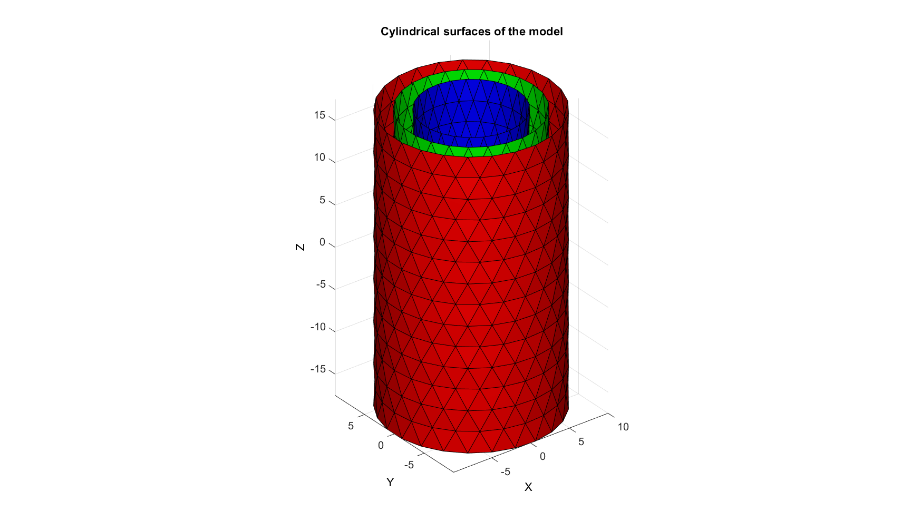
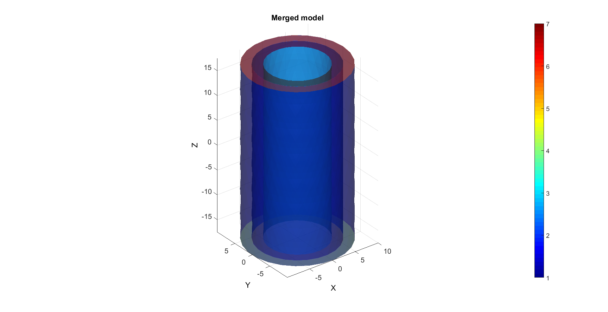
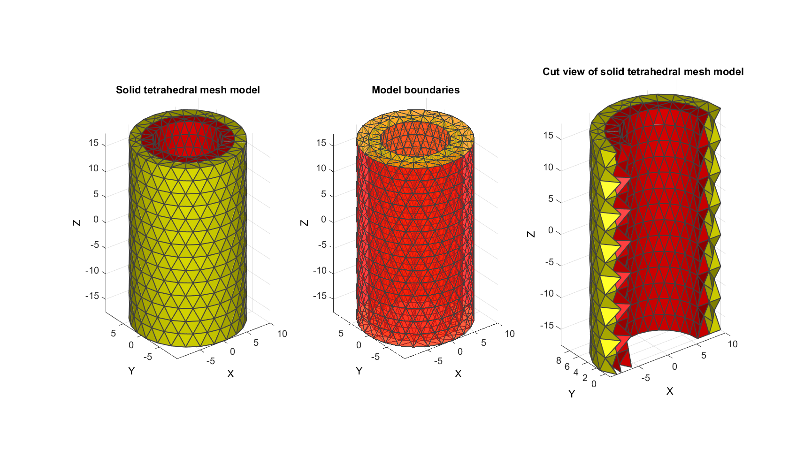
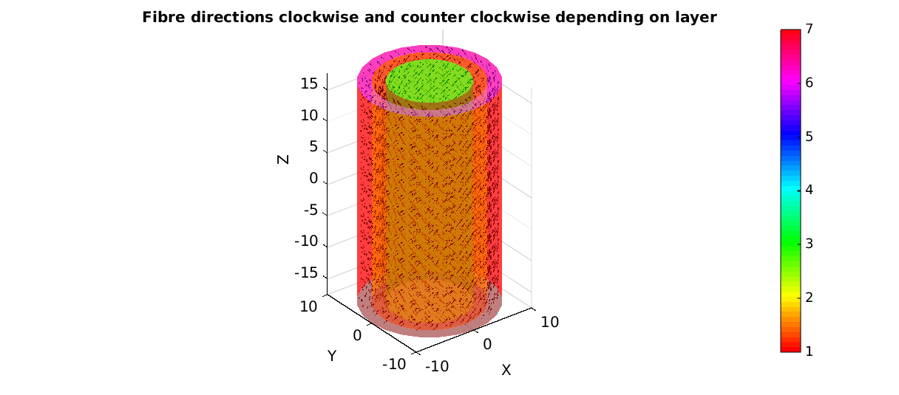
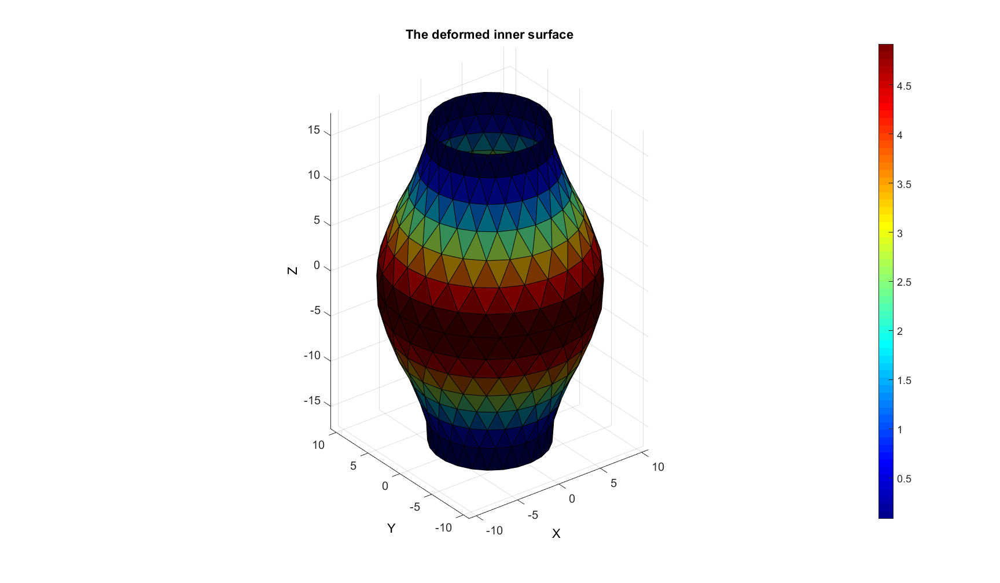
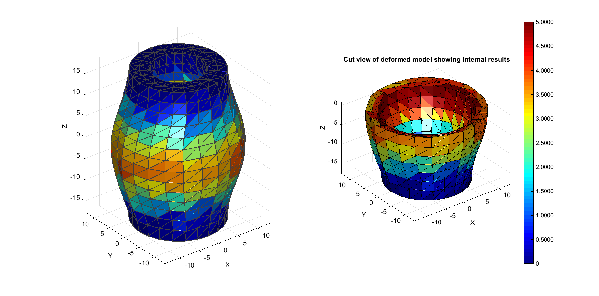
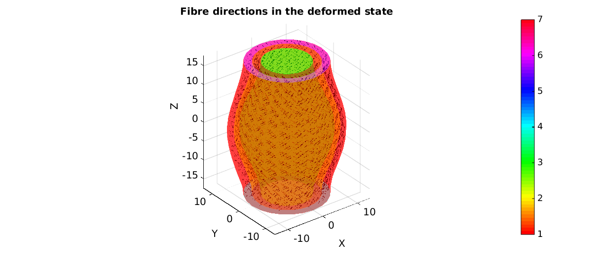

DEMO_vessel_FEBIO_fibre_mapping
Below is a demonstration of how to map, set and import fibre directions for FEBio.
Contents
- BUILDING EXAMPLE SURFACE GEOMETRY
- CAPPING MODEL
- JOINING MODEL COMPONENTS
- MESHING THE MODEL
- CREATING FIBRE DIRECTIONS
- DEFINE PRESCRIBED DISPLACEMENTS
- DEFINE BOUNDARY CONDITIONS
- CONSTRUCTING FEB MODEL
- SAVING .FEB FILE
- RUNNING FEBIO JOB
- IMPORTING NODAL DISPLACEMENT RESULTS
- CREATING NODE SET IN DEFORMED STATE
- DERIVE FIBRE DIRECTIONS IN DEFORMED STATE
A vessel model is constructed consisting of two layers with different mechanical properties and fibre directions. The inner wall of the vessel is subjected to a prescribed displacement. Fibre directions are set in the .feb file, the model is run in FEBio, results are exported and the fibre directions in the deformed state are derived from the imported model results.
clear all; close all; clc;
Plot settings
figColor='w'; figColorDef='white'; fontSize=15; faceAlpha1=0.5; faceAlpha2=0.5; edgeColor=0.25*ones(1,3); edgeWidth=1.5; markerSize1=50; % path names filePath=mfilename('fullpath'); savePath=fullfile(fileparts(filePath),'data','temp');
BUILDING EXAMPLE SURFACE GEOMETRY
% Construct regular cylinder r=10; nr=25; h=35; nz=15; ptype='tri'; [Fc,Vc]=patchcylinder(r,nr,h,nz,ptype); %Top edge indices It=ones(nr-1,1); Jt=(1:1:nr-1)'; INDt=sub2ind([nz,nr-1],It,Jt); %Bottom edge indices Ib=nz.*ones(nr-1,1); Jb=(1:1:nr-1)'; INDb=sub2ind([nz,nr-1],Ib,Jb); % Deforming regular cylinder to create outer wall V1=Vc; F1=Fc; % Creating the first inner wall [T,R,Z]=cart2pol(V1(:,1),V1(:,2),V1(:,3)); R2=R-2; V2=V1; F2=Fc; [V2(:,1),V2(:,2),V2(:,3)]=pol2cart(T,R2,Z); % Creating the second inner wall [T,R,Z]=cart2pol(V2(:,1),V2(:,2),V2(:,3)); R3=R-2; V3=V2; F3=Fc; [V3(:,1),V3(:,2),V3(:,3)]=pol2cart(T,R3,Z);
Plotting the example model surfaces
hf1=figuremax(figColor,figColorDef); title('Cylindrical surfaces of the model','FontSize',fontSize); xlabel('X','FontSize',fontSize);ylabel('Y','FontSize',fontSize); zlabel('Z','FontSize',fontSize); hold on; patch('Faces',F1,'Vertices',V1,'EdgeColor','k','FaceColor','r','FaceAlpha',1); patch('Faces',F2,'Vertices',V2,'EdgeColor','k','FaceColor','g','FaceAlpha',1); patch('Faces',F3,'Vertices',V3,'EdgeColor','k','FaceColor','b','FaceAlpha',1); axis equal; view(3); axis tight; grid on; set(gca,'FontSize',fontSize); camlight('headlight'); drawnow;
CAPPING MODEL
pointSpacingCap=2;
regionSpec{1}={V1(INDt,[1 2]),V2(INDt,[1 2])};
regionSpec{2}={V2(INDt,[1 2]),V3(INDt,[1 2])};
[Ft,Vt,regionInd_t]=multiRegionTriMesh2D(regionSpec,pointSpacingCap,0,0);
Vt(:,3)=min(V1(:,3));
regionSpec{1}={V1(INDb,[1 2]),V2(INDb,[1 2])};
regionSpec{2}={V2(INDb,[1 2]),V3(INDb,[1 2])};
[Fb,Vb,regionInd_b]=multiRegionTriMesh2D(regionSpec,pointSpacingCap,0,0);
Vb(:,3)=max(V1(:,3));
Plotting the example model surfaces
hf1=figuremax(figColor,figColorDef); title('Capped model','FontSize',fontSize); xlabel('X','FontSize',fontSize);ylabel('Y','FontSize',fontSize); zlabel('Z','FontSize',fontSize); hold on; patch('Faces',F1,'Vertices',V1,'EdgeColor','k','FaceColor','r','FaceAlpha',faceAlpha1); patch('Faces',F2,'Vertices',V2,'EdgeColor','k','FaceColor','g','FaceAlpha',faceAlpha1); patch('Faces',F3,'Vertices',V3,'EdgeColor','k','FaceColor','b','FaceAlpha',faceAlpha1); patch('Faces',Ft,'Vertices',Vt,'EdgeColor','k','FaceColor','y','FaceAlpha',faceAlpha1); patch('Faces',Fb,'Vertices',Vb,'EdgeColor','k','FaceColor','y','FaceAlpha',faceAlpha1); axis equal; view(3); axis tight; grid on; set(gca,'FontSize',fontSize); camlight('headlight'); drawnow;
JOINING MODEL COMPONENTS
%Merge point sets V=[V1;V2;V3;Vt;Vb]; F=[F1;... %Outer surface F2+size(V1,1);... %First inner surface F3+size(V1,1)+size(V2,1);... %Second inner surface Ft+size(V1,1)+size(V2,1)+size(V3,1);... %Caps top Fb+size(V1,1)+size(V2,1)+size(V3,1)+size(Vt,1)]; %Caps bottom faceBoundaryMarker=[1*ones(size(F1,1),1);... 2*ones(size(F2,1),1);... 3*ones(size(F3,1),1);... 4*ones(nnz(regionInd_t==1),1);... 5*ones(nnz(regionInd_t==2),1);... 6*ones(nnz(regionInd_b==1),1);... 7*ones(nnz(regionInd_b==2),1);... ];
Plotting the example model
hf1=figuremax(figColor,figColorDef); title('Merged model','FontSize',fontSize); xlabel('X','FontSize',fontSize);ylabel('Y','FontSize',fontSize); zlabel('Z','FontSize',fontSize); hold on; hp=patch('Faces',F,'Vertices',V,'EdgeColor','none','FaceColor','flat','CData',faceBoundaryMarker,'FaceAlpha',faceAlpha2); axis equal; view(3); axis tight; grid on; set(gca,'FontSize',fontSize); colormap jet; colorbar; camlight('headlight'); drawnow;
MESHING THE MODEL
Find mesh interior points
searchRadius=3; voxelSize=1; logicRegion=(faceBoundaryMarker==1) |... (faceBoundaryMarker==2) |... (faceBoundaryMarker==4) |... (faceBoundaryMarker==6); [V_in_1]=getInnerPoint(F(logicRegion,:),V,searchRadius,voxelSize,0); plotV(V_in_1,'k.','MarkerSize',markerSize1); drawnow; logicRegion=(faceBoundaryMarker==2) |... (faceBoundaryMarker==3) |... (faceBoundaryMarker==5) |... (faceBoundaryMarker==7); [V_in_2]=getInnerPoint(F(logicRegion,:),V,searchRadius,voxelSize,0); plotV(V_in_2,'k.','MarkerSize',markerSize1); drawnow;
V_regions=[V_in_1;V_in_2;]; % Define region points V_holes=[ ]; %Define holes regionA=[0.2 0.2]; % Regional mesh parameters
CREATING THE SMESH STRUCTURE. TetGen can mesh geometries from various mesh file formats. For the GIBBON toolbox .smesh files have been implemented. Below a structure is created that fully defines such as smesh file and the meshing settings for TetGen.
stringOpt='-pq1.2AaYQ'; modelName=fullfile(savePath,'tempModel'); smeshName=[modelName,'.smesh']; smeshStruct.stringOpt=stringOpt; smeshStruct.Faces=F; smeshStruct.Nodes=V; smeshStruct.holePoints=V_holes; smeshStruct.faceBoundaryMarker=faceBoundaryMarker; %Face boundary markers smeshStruct.regionPoints=V_regions; %region points smeshStruct.regionA=regionA; smeshStruct.minRegionMarker=2; %Minimum region marker smeshStruct.smeshName=smeshName;
Mesh model using tetrahedral elements using tetGen (see: http://wias-berlin.de/software/tetgen/)
[meshOutput]=runTetGenSmesh(smeshStruct); %Run tetGen % runTetView(meshOutput.loadNameStruct.loadName_ele);
%%%%%%%%%%%%%%%%%%%%%%%%%%%%%%%%%%%%%%%%%%%%% --- TETGEN Tetrahedral meshing --- 23-Sep-2014 13:24:35 %%%%%%%%%%%%%%%%%%%%%%%%%%%%%%%%%%%%%%%%%%%%% --- Writing SMESH file --- 23-Sep-2014 13:24:35 ----> Adding node field ----> Adding facet field ----> Adding holes specification ----> Adding region specification --- Done --- 23-Sep-2014 13:24:35 --- Running TetGen for meshing --- 23-Sep-2014 13:24:35 Opening C:\Users\kmmoerman\00_WORK\05_MATLAB\gibbon\trunk\data\temp\tempModel.smesh. --- Done --- 23-Sep-2014 13:24:35 %%%%%%%%%%%%%%%%%%%%%%%%%%%%%%%%%%%%%%%%%%%%% --- Importing TetGen files --- 23-Sep-2014 13:24:35 --- Done --- 23-Sep-2014 13:24:36
% Accessing the model element and patch data
FT=meshOutput.faces;
Fb=meshOutput.facesBoundary;
Cb=meshOutput.boundaryMarker;
VT=meshOutput.nodes;
C=meshOutput.faceMaterialID;
E=meshOutput.elements;
elementMaterialIndices=meshOutput.elementMaterialID;
Plotting the meshed geometry
hf1=figuremax(figColor,figColorDef); subplot(1,3,1); title('Solid tetrahedral mesh model','FontSize',fontSize); xlabel('X','FontSize',fontSize); ylabel('Y','FontSize',fontSize); zlabel('Z','FontSize',fontSize); hold on; hps=patch('Faces',FT,'Vertices',VT,'FaceColor','flat','CData',C,'lineWidth',edgeWidth,'edgeColor',edgeColor); view(3); axis tight; axis equal; grid on; camlight headlight; set(gca,'FontSize',fontSize); subplot(1,3,2); title('Model boundaries','FontSize',fontSize); xlabel('X','FontSize',fontSize); ylabel('Y','FontSize',fontSize); zlabel('Z','FontSize',fontSize); hold on; hps=patch('Faces',Fb,'Vertices',VT,'FaceColor','flat','CData',Cb,'lineWidth',edgeWidth,'edgeColor',edgeColor,'FaceAlpha',faceAlpha1); view(3); axis tight; axis equal; grid on; set(gca,'FontSize',fontSize); subplot(1,3,3); %Selecting half of the model to see interior Y=VT(:,2); YE=mean(Y(E),2); L=YE>mean(Y); [Fs,Cs]=element2patch(E(L,:),C(L)); title('Cut view of solid tetrahedral mesh model','FontSize',fontSize); xlabel('X','FontSize',fontSize); ylabel('Y','FontSize',fontSize); zlabel('Z','FontSize',fontSize); hold on; hps=patch('Faces',Fs,'Vertices',VT,'FaceColor','flat','CData',Cs,'lineWidth',edgeWidth,'edgeColor',edgeColor); view(3); axis tight; axis equal; grid on; camlight headlight; set(gca,'FontSize',fontSize); colormap(autumn); drawnow;
CREATING FIBRE DIRECTIONS
%Compute coordinates at the centre of elements for fibre origings X=VT(:,1); Y=VT(:,2); Z=VT(:,3); XE=mean(X(E),2); YE=mean(Y(E),2); ZE=mean(Z(E),2); VE=[XE(:) YE(:) ZE(:)]; L1=elementMaterialIndices==-2; L2=elementMaterialIndices==-3; zDir=[0 0 1]; VE_XY=VE; VE_XY(:,3)=0; VE_XY=vecnormalize(VE_XY); Vf_E=cross(VE_XY,zDir(ones(size(VE,1),1),:)); %I.e. radial tangent Vf_E=vecnormalize(Vf_E); Vf_E(L1,:)=-Vf_E(L1,:); %I.e. radial tangent flipped Vf_E(:,3)=1; Vf_E=vecnormalize(Vf_E); %Create patch data for fibres [Ff,Vf,Cf]=quiver3Dpatch(VE(:,1),VE(:,2),VE(:,3),Vf_E(:,1),Vf_E(:,2),Vf_E(:,3),ones(size(Vf_E,1),1),[1 1]);
Plotting the example model
hf1=figuremax(figColor,figColorDef); title('Fibre directions clockwise and counter clockwise depending on layer','FontSize',fontSize); xlabel('X','FontSize',fontSize);ylabel('Y','FontSize',fontSize); zlabel('Z','FontSize',fontSize); hold on; hp=patch('Faces',Fb,'Vertices',VT,'EdgeColor','none','FaceColor','flat','CData',Cb,'FaceAlpha',faceAlpha2); hp=patch('Faces',Ff,'Vertices',Vf,'EdgeColor','none','FaceColor','k'); % plotV(VE,'k.'); axis equal; view(3); axis tight; grid on; set(gca,'FontSize',fontSize); colormap hsv; colorbar; set(gca,'FontSize',fontSize); drawnow;
DEFINE PRESCRIBED DISPLACEMENTS
%Get inner surface (numbering may have altered due to tetgen behaviour so %redefined here) F_inner=Fb(Cb==3,:); indInner=unique(F_inner(:)); V_inner=VT(indInner,:); % Defining deformed boundary coordinates f=abs(V_inner(:,3)-min(VT(:,3))); f=f./max(f(:)); [THETA,R,Z] = cart2pol(V_inner(:,1),V_inner(:,2),V_inner(:,3)); R=R+2.5*(1-cos(2*pi*f)); V_inner_def=V_inner; [V_inner_def(:,1),V_inner_def(:,2),V_inner_def(:,3)]=pol2cart(THETA,R,Z); % Define boundary displacement values bcPrescribedMagnitudes=(V_inner_def-V_inner); % Define indices (node numbers) for the prescribed displacement bcIndicesPrescribed=indInner;
DEFINE BOUNDARY CONDITIONS
boundaryConditionNodeList=Fb(Cb==4 | Cb==5 | Cb==6 | Cb==7,:);
boundaryConditionNodeList=unique(boundaryConditionNodeList(:));
plotV(VT(boundaryConditionNodeList,:),'k.');
Plotting deformed inner surface
C_inner=sqrt(sum(bcPrescribedMagnitudes.^2,2)); %Color towards displacement magnitude CV=zeros(size(VT,1),1); CV(indInner)=C_inner; [CF]=vertexToFaceMeasure(F_inner,CV); VT_def=VT; VT_def(indInner,:)=V_inner_def; figuremax(figColor,figColorDef); hold on; title('The deformed inner surface','FontSize',fontSize); xlabel('X','FontSize',fontSize); ylabel('Y','FontSize',fontSize); zlabel('Z','FontSize',fontSize); patch('Faces',F_inner,'Vertices',VT_def,'FaceColor','flat','CData',CF,'FaceAlpha',1); colormap jet; colorbar; camlight headlight; set(gca,'FontSize',fontSize); view(3); axis tight; axis equal; grid on;
CONSTRUCTING FEB MODEL
% Defining file names FEB_struct.run_filename=[modelName,'.feb']; %FEB file name FEB_struct.run_logname=[modelName,'.txt']; %FEBio log file name febMatID=elementMaterialIndices; febMatID(elementMaterialIndices==-2)=1; febMatID(elementMaterialIndices==-3)=2; %Creating FEB_struct FEB_struct.Geometry.Nodes=VT; FEB_struct.Geometry.Elements={E}; %The element sets FEB_struct.Geometry.ElementType={'tet4'}; %The element types FEB_struct.Geometry.ElementMat={febMatID}; % DEFINING MATERIALS k_factor=1000; %Material 1 c1=0.0008; m1=10; ksi=0.002; beta=3; k=0.5.*(c1+ksi)*k_factor; Mat1.type='uncoupled solid mixture'; Mat11.type='Ogden'; Mat11.props={'c1','m1','k'}; Mat11.vals={c1,m1,k}; Mat11.aniso_type='none'; Mat12.type='fiber-exp-pow-uncoupled'; Mat12.props={'ksi','alpha','beta','theta','phi','k'}; Mat12.vals={ksi,1e-25,beta,0,0,k}; Mat12.aniso_type='none'; Mat1.Mats={Mat11 Mat12}; %Material 2 c1=0.0004; m1=10; ksi=0.001; beta=3; k=0.5.*(c1+ksi)*k_factor; Mat2.type='uncoupled solid mixture'; Mat11.type='Ogden'; Mat11.props={'c1','m1','k'}; Mat11.vals={c1,m1,k}; Mat11.aniso_type='none'; Mat12.type='fiber-exp-pow-uncoupled'; Mat12.props={'ksi','alpha','beta','theta','phi','k'}; Mat12.vals={ksi,1e-25,beta,0,0,k}; Mat12.aniso_type='none'; Mat2.Mats={Mat11 Mat12}; FEB_struct.Materials{1}=Mat1; FEB_struct.Materials{2}=Mat2; %Adding fibre direction, construct local orthonormal basis vectors a=rand(size(Vf_E))-Vf_E(:,[3 1 2]); [a]=vecnormalize(a); %A "random" normalised vector a d=cross(Vf_E,a); [d]=vecnormalize(d); %d is orthogonal to Vf_E and a a=cross(d,Vf_E); [a]=vecnormalize(a); %a is reset to be orthogonal to both Vf_E and d VF_E=nan(size(Vf_E,1),size(Vf_E,2),2); VF_E(:,:,1)=a; %a1 ~ e1 ~ X or first direction VF_E(:,:,2)=d; %a2 ~ e2 ~ Y or second direction %Vf_E %a3 ~ e3 ~ Z, third direction, or fibre direction FEB_struct.Geometry.ElementData.MatAxis.ElementIndices=1:1:size(E,1); FEB_struct.Geometry.ElementData.MatAxis.Basis=VF_E; %Adding BC information FEB_struct.Boundary.FixList={boundaryConditionNodeList}; FEB_struct.Boundary.FixType={'xyz'}; FEB_struct.Boundary.PrescribeList={bcIndicesPrescribed,bcIndicesPrescribed,bcIndicesPrescribed}; FEB_struct.Boundary.PrescribeType={'x','y','z'}; FEB_struct.Boundary.PrescribeValues={bcPrescribedMagnitudes(:,1),bcPrescribedMagnitudes(:,2),bcPrescribedMagnitudes(:,3)}; FEB_struct.Boundary.LoadCurveIds=[1 1 1]; %Adding output requests FEB_struct.Output.VarTypes={'displacement','stress','relative volume','shell thickness'}; %Specify log file output run_output_name1=[FEB_struct.run_filename(1:end-4),'_node_out.txt']; run_output_name2=[FEB_struct.run_filename(1:end-4),'_F_out.txt']; FEB_struct.run_output_names={run_output_name1,run_output_name2}; FEB_struct.output_types={'node_data','element_data'}; FEB_struct.data_types={'ux;uy;uz','Fxx;Fxy;Fxz;Fyx;Fyy;Fyz;Fzx;Fzy;Fzz'}; %Control section FEB_struct.Control.AnalysisType='static'; FEB_struct.Control.Properties={'time_steps','step_size',... 'max_refs','max_ups',... 'dtol','etol','rtol','lstol'}; FEB_struct.Control.Values={10,0.1,... 25,0,... 0.001,0.01,0,0.9}; FEB_struct.Control.TimeStepperProperties={'dtmin','dtmax','max_retries','opt_iter','aggressiveness'}; FEB_struct.Control.TimeStepperValues={1e-5, 0.1, 5, 5, 1}; %Load curves FEB_struct.LoadData.LoadCurves.id=[1]; FEB_struct.LoadData.LoadCurves.type={'smooth'}; FEB_struct.LoadData.LoadCurves.loadPoints={[0 0;1 1]};
SAVING .FEB FILE
FEB_struct.disp_opt=0; %Turn on displaying of progress
febStruct2febFile_v1p2(FEB_struct);
%%%%%%%%%%%%%%%%%%%%%%%%%%%%%%%%%%%%%%%%%%%%% --- Writing FEBio XML object --- 23-Sep-2014 13:24:41 Adding Module level Adding Globals level Adding Material level Adding Geometry level ----> Adding node field ----> Adding element field ----> Adding tet4 element entries.... ----> Adding element data field ----> MatAxis data entries found Adding Output level ----> Adding plotfile field ----> Adding logfile field Adding Boundary level ----> Defining fix type boundary conditions ----> Defining prescribe type boundary conditions Adding LoadData level ----> Defining load curves Writing .feb file --- Done --- 23-Sep-2014 13:24:46
RUNNING FEBIO JOB
FEBioRunStruct.run_filename=FEB_struct.run_filename; FEBioRunStruct.run_logname=FEB_struct.run_logname; FEBioRunStruct.disp_on=1; FEBioRunStruct.disp_log_on=1; FEBioRunStruct.runMode='external';%'internal'; FEBioRunStruct.t_check=0.25; %Time for checking log file (dont set too small) FEBioRunStruct.maxtpi=1e99; %Max analysis time FEBioRunStruct.maxLogCheckTime=3; %Max log file checking time [runFlag]=runMonitorFEBio(FEBioRunStruct);%START FEBio NOW!!!!!!!!
%%%%%%%%%%%%%%%%%%%%%%%%%%%%%%%%%%%%%%%%%%%%% --- STARTING FEBIO JOB --- 23-Sep-2014 13:24:46 Waiting for log file... Proceeding to check log file...23-Sep-2014 13:24:47 ------- converged at time : 0.1 ------- converged at time : 0.184517 ------- converged at time : 0.261671 ------- converged at time : 0.338825 ------- converged at time : 0.418675 ------- converged at time : 0.500904 ------- converged at time : 0.585231 ------- converged at time : 0.671407 ------- converged at time : 0.759215 ------- converged at time : 0.848463 ------- converged at time : 0.938979 ------- converged at time : 1 --- Done --- 23-Sep-2014 13:24:51
IMPORTING NODAL DISPLACEMENT RESULTS
Importing nodal displacements from a log file
[~, N_disp_mat,~]=importFEBio_logfile(FEB_struct.run_output_names{1}); %Nodal displacements
DN=N_disp_mat(:,2:end,end); %Final nodal displacements
%Import deformation gradient tensors
[~,FG_mat,~]=importFEBio_logfile(FEB_struct.run_output_names{2}); %Deformation gradient tensors
FG=FG_mat(:,2:end,end);
CREATING NODE SET IN DEFORMED STATE
VT_def=VT+DN;
Plotting the FEA results
hf=figuremax(figColor,figColorDef); subplot(1,2,1); xlabel('X','FontSize',fontSize); ylabel('Y','FontSize',fontSize); zlabel('Z','FontSize',fontSize); hold on; C=sqrt(sum(DN.^2,2)); %Color towards displacement magnitude hps=patch('Faces',FT,'Vertices',VT_def,'FaceColor','flat','CData',C,'lineWidth',edgeWidth,'edgeColor',edgeColor); view(3); axis tight; axis equal; grid on; camlight headlight; set(gca,'FontSize',fontSize); subplot(1,2,2); title('Cut view of deformed model showing internal results','FontSize',fontSize); xlabel('X','FontSize',fontSize); ylabel('Y','FontSize',fontSize); zlabel('Z','FontSize',fontSize); hold on; %Selecting half of the model to see interior Z=VT(:,3); ZE=mean(Z(E),2); L=ZE<mean(Z); [Fs,~]=element2patch(E(L,:),[]); Cs=sqrt(sum(DN.^2,2)); %Color towards displacement magnitude hps=patch('Faces',Fs,'Vertices',VT_def,'FaceColor','flat','FaceVertexCData',Cs); view(3); axis tight; axis equal; grid on; colormap jet; colorbar; camlight headlight; set(gca,'FontSize',fontSize); drawnow;
DERIVE FIBRE DIRECTIONS IN DEFORMED STATE
%Compute coordinates at the centre of elements for fibre origings X=VT_def(:,1); Y=VT_def(:,2); Z=VT_def(:,3); XE=mean(X(E),2); YE=mean(Y(E),2); ZE=mean(Z(E),2); VE_def=[XE(:) YE(:) ZE(:)]; Vf_E_def=Vf_E; for q=1:1:size(E,1) fg=reshape(FG(q,:),3,3)'; vn=vecnormalize(fg*Vf_E(q,:)')'; %Mapped/stretched vector Vf_E_def(q,:)=vn; end %Create patch data for fibres [Ff_def,Vf_def,Cf_def]=quiver3Dpatch(VE_def(:,1),VE_def(:,2),VE_def(:,3),Vf_E_def(:,1),Vf_E_def(:,2),Vf_E_def(:,3),ones(size(Vf_E_def,1),1),[1 1]);
Plotting the example model
hf1=figuremax(figColor,figColorDef); title('Fibre directions in the deformed state','FontSize',fontSize); xlabel('X','FontSize',fontSize);ylabel('Y','FontSize',fontSize); zlabel('Z','FontSize',fontSize); hold on; hp=patch('Faces',Fb,'Vertices',VT_def,'EdgeColor','none','FaceColor','flat','CData',Cb,'FaceAlpha',faceAlpha2); hp=patch('Faces',Ff_def,'Vertices',Vf_def,'EdgeColor','none','FaceColor','k'); % plotV(VE,'k.'); axis equal; view(3); axis tight; grid on; set(gca,'FontSize',fontSize); colormap hsv; colorbar; set(gca,'FontSize',fontSize); drawnow;

GIBBON
Kevin M. Moerman (kevinmoerman@hotmail.com)